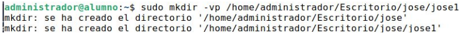
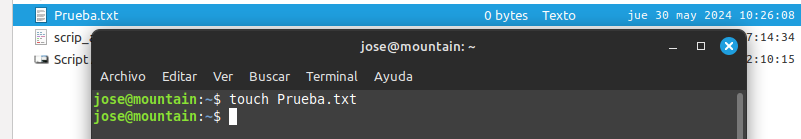

Creación de directorios
En este apartado vamos a comenzar con la cración de directorios.
1. Directorios.
Para poder crear directorios en Linux debemos utilizar el comando mkdir.
La sintáxis básica de este comando es: mkdir [opciones] fichero1 fichero2 ... ficheroN
Opciones:
-m: establece permisos para su creación.
-p: si hay error porque no existe el directorio padre, lo crea.
-v: muestra un mensaje por cada directorio creado.

2. Archivos.
Para poder crear archivos es posible realizarlo por medio de varias formas, pero una de las más sencillas si quermos crear un archivo vacío, es la utilización del comando touch.
Sintáxis: touch Archivo
